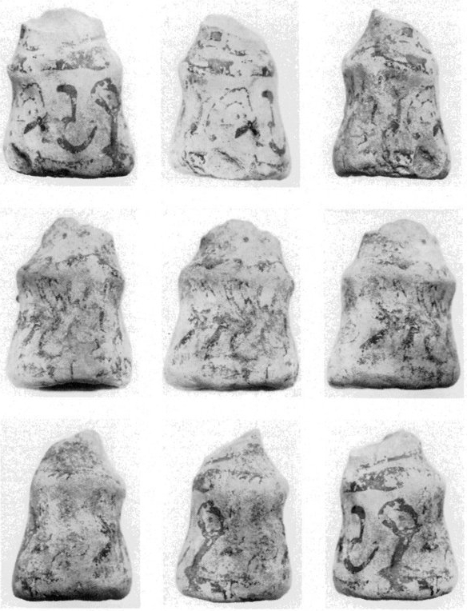
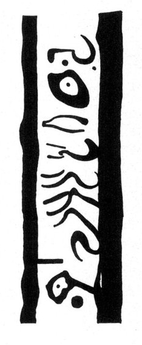

-
POZc1
Names
POZc1, PORZg1, PO Zc 1
Support
Inked inscription
Location
Poros Herakleiou
Findspot
Unavailable


Scribe
Unavailable
Context
Post Palace period. Late Minoan IIIB
1350-1100 BCE
Dimensions
Catalogue
Readings
1 1 0 RI none
1 1 0 QE none
1 1 0 TI none
1 1 0 A none
1 1 0 SA none
1 1 0 SA none
1 1 0 RA none
1 1 0 *325 none
1 1 1 *900 none
𐘭𐘿𐘠𐘇𐘞𐘞𐘴𐙱𐄁
RIQETIASASARA*325*900
𐘭𐘿𐘠𐘇𐘞𐘞𐘴𐙱𐄁
RIQETIASASARA*325*900
PO
Zc 1
(HM 27663; Dimopoulou, Olivier, & Rethemiotakis, BCH 117, 1993, 501-521; the original publication classifies the inscription as PO Zg 1), dipinto on wheel-made
female figurine, LM III A:1-2 by context and form of the bell-shaped skirt (LM II-IIIA), making this the latest example of Linear A (the 2nd latest being KN Zb 40)
retrograde:
RI
-QE-TI-
A
-SA-SA-RA-*
325
•
JGY finds all the signs slightly
doubtful, none more so than the others.
David Willem Borgdorff (personal communication 23 July 2002) suggested
that
the phrase should be understood as separated into two parts
(
RI
-QE-TI
A
-SA-SA-RA-*
325
), though that might obscure
the meaning, if the final -I (in
RI
-QE-TI) acted like the usual
prefix J- to
A
-SA-SA-RA. It is likely that *325 stands for
either the usual ending -ME or the variant ending -MANA.
PRASSA
Commentary © John Younger
References